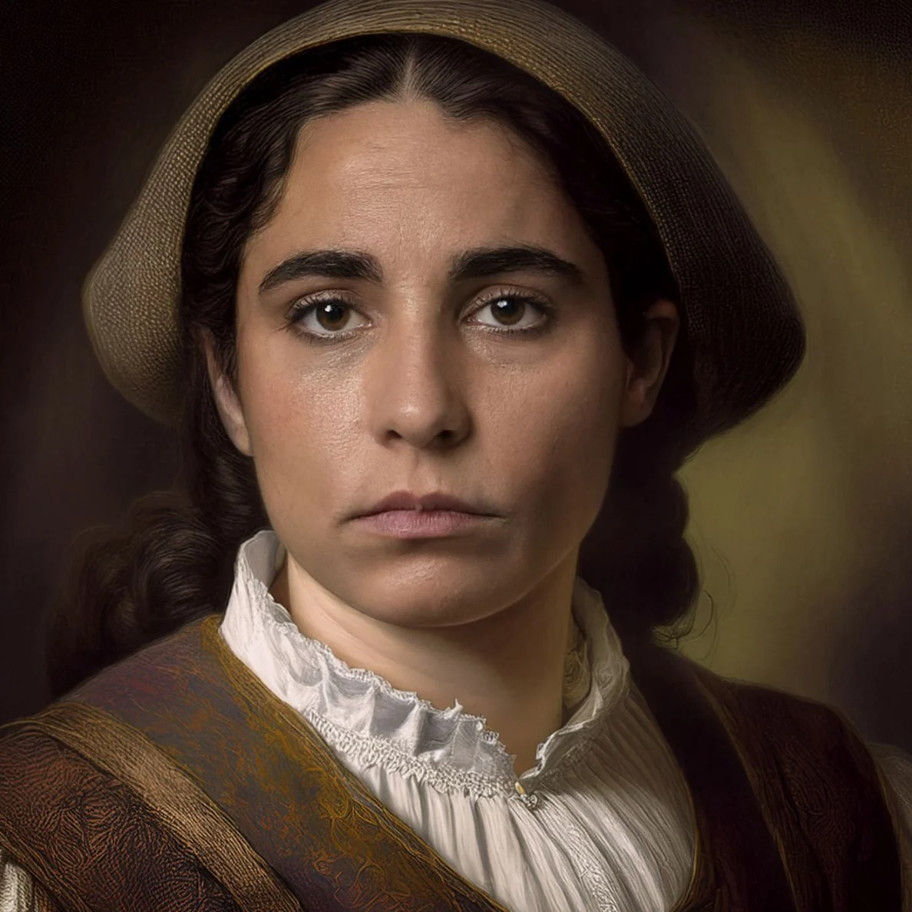
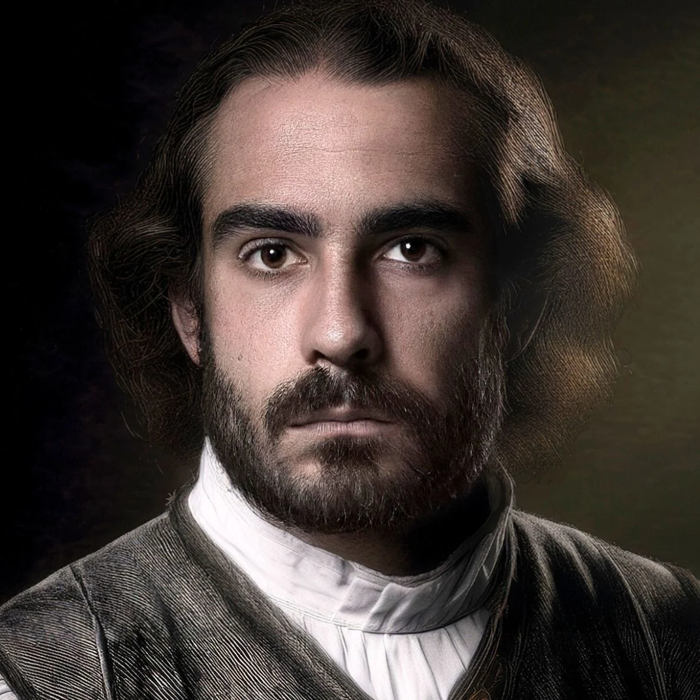
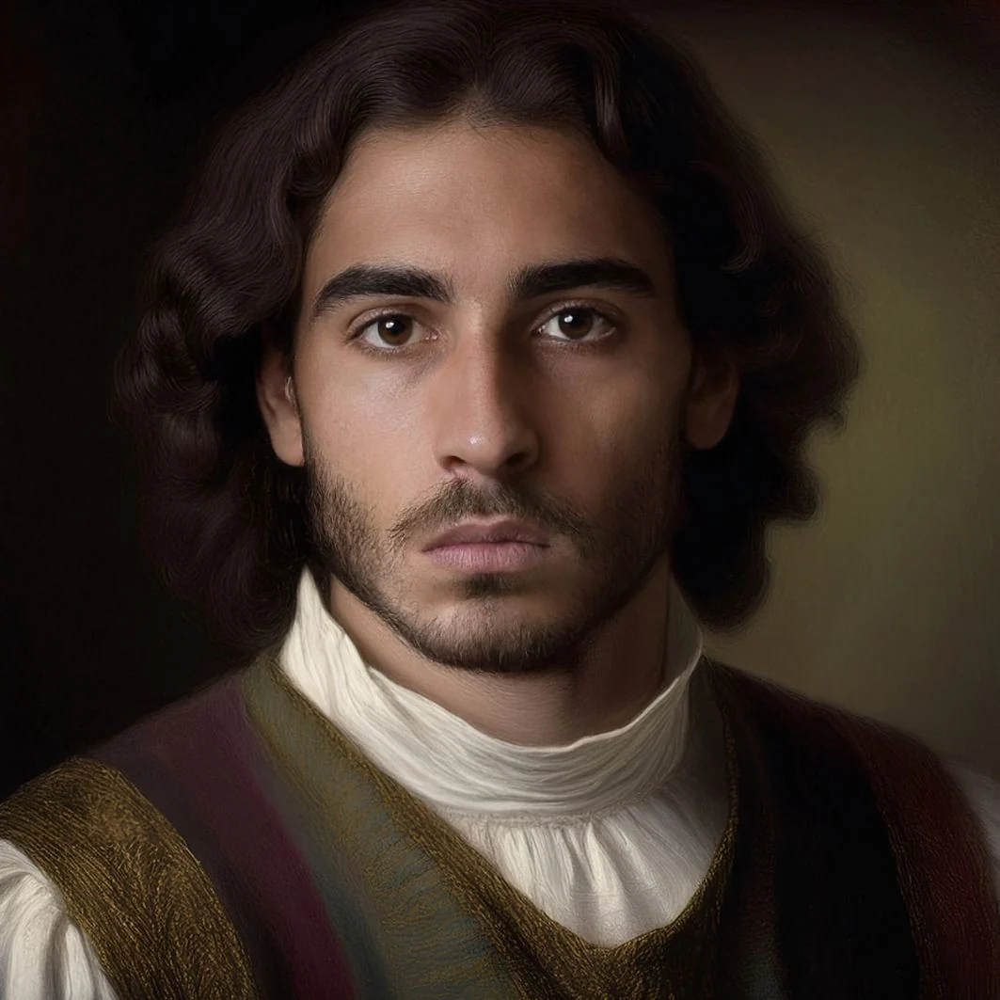
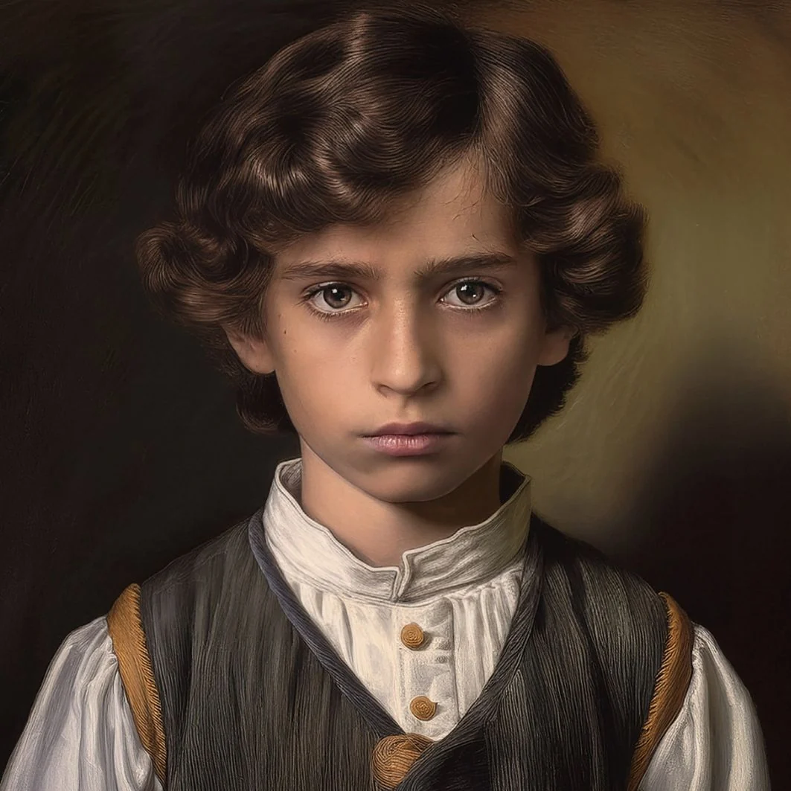

Ein Vogt, eine Familie – und ein Fluch.

22 Jahre alt, gläubig, leidet unter Verantwortung für ihre Familie. Wird vom Vogt verschleppt.

37 Jahre alt, machtbesessen und gnadenlos. Verkörpert Herrschaft über Leben und Tod.

20 Jahre, verzweifelter Bruder von Katharina. Vom Wunsch nach Rache getrieben.

4 Jahre alt, Katharinas kleiner Bruder. Symbol der Unschuld inmitten der Dunkelheit.
Schauspielerin aus Köln. Ausgebildet für Film, Theater und Werbung, spricht Deutsch, Englisch, Französisch und Russisch.
Österreichischer Schauspieler und Regisseur, geboren in Innsbruck. Studium an der Kunstuniversität Graz, seit 2007 auf Bühnen im gesamten deutschsprachigen Raum.
Studiert Medienkonzeption an der Hochschule Furtwangen und schrieb als Co-Autor das Theaterstück „Adas Code – Ein Gedankenspiel“.
Schauspielerin und Coach. Vor der Kamera u. a. in „Wenn die Nacht kommt“, „Hotel Europa“ und „Saitenwechsler – Tango“.